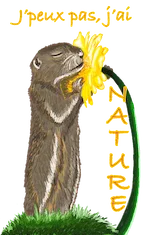
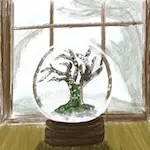

2020
Mars
-
31 —
Voyage à Bergen en mai 2017
- 26 — La vie secrète des arbres de Peter Wohlleben
- 23 —  Spreadshirt - Designs pour vêtements
-
22 —
Creacover 2020
Février

Janvier
2019
Novembre
-
01 —
Inktober 2019

Septembre
Juillet
Juin
Mai
- 22 — Prologue de Samare
- 19 — Frise chronologique
- 19 — Conrad
- 19 — Thémmé
- 19 — Martha
- 19 — Johana
- 19 — Arletty
- 19 — Romarin
- 19 — Anne-Lys